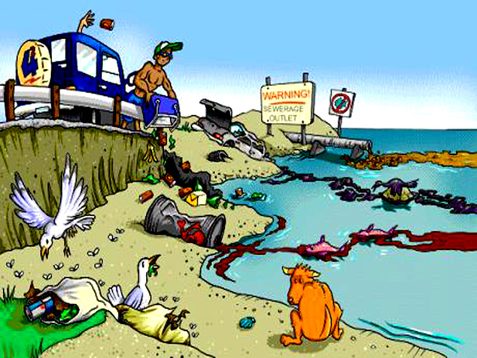
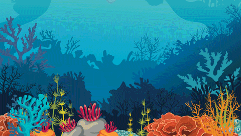

शीर्षक: जल प्रदूषण
पाणी हे जीवनाचे अमृत आहे. परंतु आजकाल जल प्रदूषण एक गंभीर समस्या बनली आहे. यामुळे मानवी जीवनावर आणि पर्यावरणावर विपरीत परिणाम होत आहे.
जल प्रदूषणाची कारणे
औद्योगिक कचरा: कारखान्यांमधून रासायनिक आणि विषारी पदार्थ नद्यांमध्ये सोडले जातात. घरगुती कचरा: सांडपाणी, प्लास्टिक आणि इतर कचरा पाण्यात टाकला जातो. शेतीतील रसायने: रासायनिक खते आणि कीटकनाशके पाण्यामध्ये मिसळतात. नैसर्गिक कारणे: अतिवृष्टीमुळे माती आणि कचरा पाण्यात वाहून जातो.
जल प्रदूषणाचे परिणाम
आरोग्यावर परिणाम: दूषित पाण्यामुळे अनेक रोग पसरतात, जसे की कॉलरा, टायफॉइड. पर्यावरणावर परिणाम: जलचर प्राणी आणि वनस्पतींना धोका निर्माण होतो. पाण्याची कमतरता: पिण्याच्या पाण्याची समस्या वाढते.
जल प्रदूषण रोखण्याचे उपाय
औद्योगिक कचरा व्यवस्थापन: कारखान्यांनी कचरा योग्य प्रकारे जमिनीत पुरावा. कचरा व्यवस्थापन: कचरा योग्य ठिकाणी टाकावा आणि पुनर्वापर करावा. रासायनिक खतांचा वापर कमी करावा: नैसर्गिक खतांचा वापर करावा. जागरूकता: लोकांमध्ये जल प्रदूषणाबद्दल जागरूकता निर्माण करावी.
जल प्रदूषण ही एक गंभीर समस्या आहे आणि यावर तातडीने उपाय करणे आवश्यक आहे. आपण सर्वांनी मिळून पाण्याचे महत्त्व जपावे आणि प्रदूषण रोखावे.
|

जल प्रदूषणाची कारणे

जल प्रदूषणाचे परिणाम
|